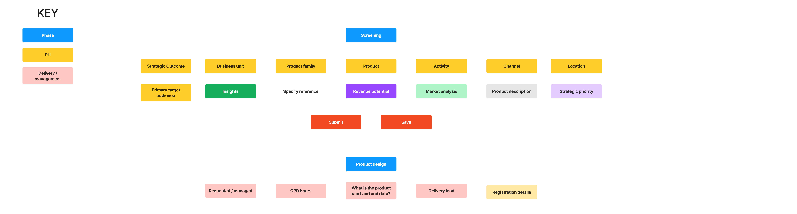
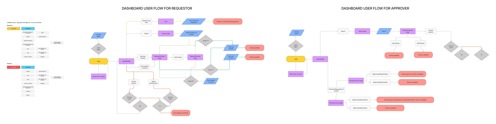
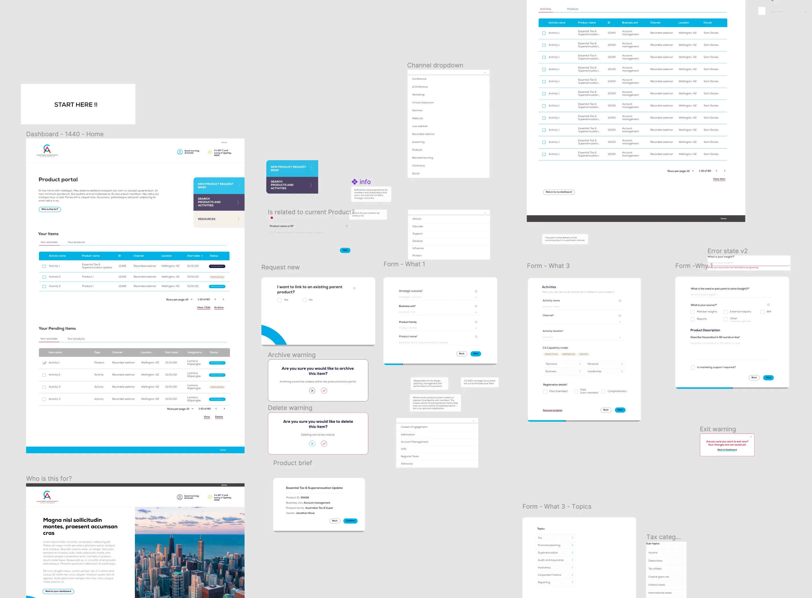
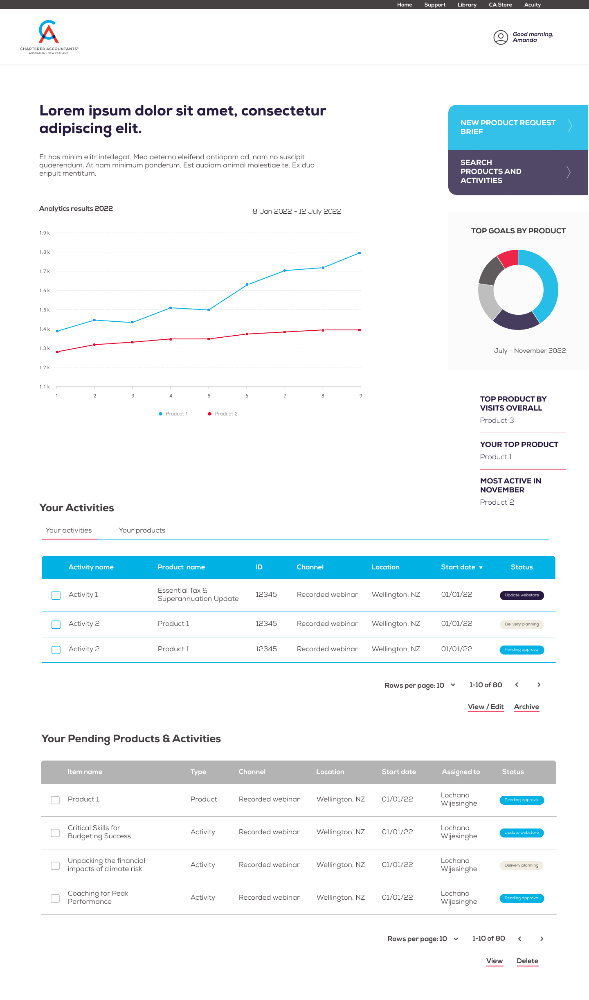

CAANZ Authenticated Portal & Dashboard
Through working with the Codehouse group, I was placed on a large project to work with Chartered Accountants product owners to workshop, strategise and then design an intranet to help organise their internal product workflows which at the time were somewhat chaotic and causing a lot problems for the business.
The first part of the process was really to understand from the client who this workflow is for, what will the persona / user types be, and what they need to access in order to complete what they need to do and consider in order to have new products and items approved for the business and ultimately go live on the website.
I created extensive user journeys and mind maps for each persona or employee type who would need to use the intranet, as seen below. This process was needed in order to understand what, why and who was this project aimed at. What we found was that there were two main personas to design for - the Requestor and the Approver. There were also a couple of other user types who would need to access the dashboard, but we would design for the more complex workflows first, which are presented below.
It was also essential to understand which functionalities were required for each dashboard - to show the users active products, active activities as well aspending items, company-wide search and resources. This was on top of the workflows attached to creating and updating new items.


After the initial research, I presented the idea of designing a personalised user dashboard which had a workflow attached of a number of multi-step forms to help the user complete their designated product workflow. The huge challenge for this project was to design an easy-to-use process out of what over the years had become quite a convoluted and difficult to follow workflow.
As well as being a workflow dashboard, I presented the idea that the landing page could also tie into the analytics engine of the CMS they are using, and so could also present important data collected relating to the products they own as well company-wise products. The client loved these ideas when presented to them in low-fidelity wireframes.


After getting sign off and business approval on the initial wireframes, it was a time to do some more research into what was probably the most improtant part of the intranet in the forms themselves. As the initial research suggested that these were quite likely to be quite long and complicated forms involving a lot of approvals from various stakeholders, I decided that the best way to present them would be as multi-step form modals with the workflow broken up into manageable parts rather than presented all at once to the user which may be overwhelming.
It was also really important at this stage to talk to the developers assigned to the project about the technicalities / possibilities of having elements included like a status bar to show the user how far they have progressed in the workflow and auto-save functions to allow to the user to come back later to the workflow if required.
An interesting challenge at this stage was that there were two main workflows here - for products and then for activties. However, the two were intertwined in that you needed to create a product before you could plan activities for it. Then also the user needed to be able to update live and pending activities and request access to find, view and edit other users items.


After a lot of practice user interactions and stakeholder reviews, we reworked, rethought and updated the design flow to roll out a minimal, attractive, informative and user friendly system for the employees of CAANZ to finally have a business-approved workflow of creating, updating and keeping track of live products within their various teams.
As a business who were yet to fully take advantage of digital products and analytics, CAANZ were ecstatic with the results. A future phase two would include more integration with website analytics and an ability to update the product pages of CMS directly from a new workflow on the dashboard.


